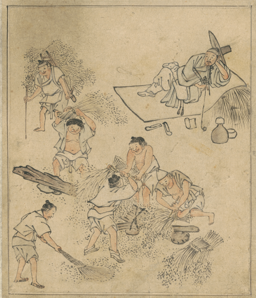
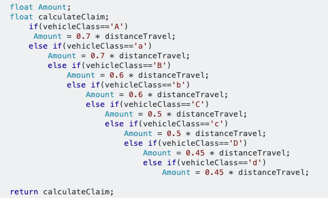

사전 학습
엄청난 양의 언어 패턴과 범용 지식을 이미 익혔다.
새롭게 등장한 개념이 아니다.
AI가 없던 시절에도 사람들은 업무 자동화를 해왔다.
어떻게? →

김홍도, 풍속도첩 중 「타작」
일을 나누고, 지시하고, 확인하는 구조
사람이 사람에게
업무 지시하는 것
=
사람이 AI에게
업무 지시하는 것
집주인 양반이 노비 시장에서 노비를 하나 데려왔다.
그래서 우리는 새 도구의 이름보다, 업무를 제대로 위임하는 원칙을 먼저 기억해야 한다.
AI는 인간보다 작업 속도가 빠르다.
다만 사람에게 위임하든 AI에게 위임하든, 목표·맥락·제약·검증 기준이 부실하면 결과도 흔들린다.
엄청난 양의 언어 패턴과 범용 지식을 이미 익혔다.
시스템 지침, 안전 정책, 도구 규칙, 대화 관리가 서비스에 내장돼 있다.
범용 질문은 평균적인 답만으로도 많은 사용자가 만족한다.
특수한 업무로 들어가는 순간, 내 조직의 맥락과 규칙을 직접 제공해야 한다.
모든 규칙을 사람이 명시한다.
예시로 가중치를 학습한다.
언어와 컨텍스트로 행동을 지시한다.
if (vip) discount = 20; else if (coupon) discount = 10; else if (event && firstBuy) ... else if (...) ...

명시적 규칙의 끝: else-if 지옥
“오늘 날씨가 좋다”
실제 ID와 분할 방식은 모델마다 다르다.
예측 목표: “오늘 날씨가 좋다”
정답과 예측의 오차를 계산하고, 오차가 줄어드는 방향으로 가중치를 조금씩 바꾼다.
누구에게나 친숙하고, 명시 규칙과 학습된 암묵 규칙이 함께 작동한다.
역할: 당신은 고객지원 담당자입니다.
목표: 환불 요청의 긴급도를 분류하세요.
규칙: 정책 문서에 없는 내용은 추측하지 마세요.
출력: {"등급": "...", "이유": "...", "다음 행동": "..."}
Software 3.0은 자연어 인터페이스다. 그 아래에서는 Software 2.0의 학습된 가중치가 계속 계산한다.
도구가 필요하면 모델은 자연어 의도를 구조화된 호출이나 코드로 변환해 실행 환경에 요청한다.
가치 판단처럼 보이는 답변도 학습 데이터, 후속 정렬, 시스템 정책, 현재 컨텍스트의 결과다.
아키텍처, 트래픽, 장애 이력, 비용, 규제, 목표가 없다. AI는 일반론만 말하거나 추측한다.
AI는 사용자가 어느 나라 주식을 원하는지, 언제 얼마를 매수할지, 단기·중기·장기 중 얼마나 보유할지, 손실을 얼마나 감수할지 모른다.
표·보고서·종목 목록 등 원하는 결과 양식도 없으므로, 결국 일반적인 수준의 답만 줄 수 있다.
모델의 한계만 탓하기 전에, 업무의 정답지를 정의했는지 확인해야 한다.
한국어를 흔히 고맥락 언어라고 부르지만, 개인·조직·상황 차이가 크다. AI에게는 암묵적 맥락을 기대하지 않는 편이 안전하다.
사람 사이에서는 “문제점을 찾아 수정안까지 달라”는 뜻일 수 있다. AI는 요약만 하고 끝낼 수 있다.
완곡한 거절 의도였지만 상대는 “어렵지만 가능”으로 받아들여 계속 진행할 수 있다.
대상, 증거, 목표, 제약, 결과 형식이 없다.
역할: 당신은 SRE 리드입니다.
목표: 09:00~09:20 결제 오류 급증의 가장 유력한 원인 3개를 찾으세요.
근거: 첨부 로그와 배포 이력만 사용하고, 모르면 “근거 부족”이라고 쓰세요.
규칙: 각 가설에 근거·반증 방법·위험도를 붙이세요.
출력: 표 + 즉시 조치 3단계. 감사합니다.
칭찬과 감사는 대화를 부드럽게 할 수 있지만, 품질을 결정하는 핵심은 역할·목표·맥락·제약·검증 기준이다.
그럴듯하지만 바로 행동하기 어렵다.
근거와 다음 행동을 바로 검증할 수 있다.
사용자 의도를 해석하고 어떤 기능을 쓸지 결정
파일, DB, GitHub, 사내 API, 브라우저
허용된 도구, 입력 스키마, 권한, 승인 흐름으로 “무엇을 할 수 있는지”를 제한한다.
모델 혼자 못 하는 읽기·검색·실행을 외부 서버가 제공하고, 클라이언트가 공통 방식으로 발견한다.
비밀을 손등에 적음 → 자격 증명 노출
청소 권한을 자산 이동까지 확대 → 최소 권한·작업 범위 실패
파괴적 작업에 승인 단계 없음 → 명시적 동의·감사 로그 실패
{
"mcpServers": {
"project-files": {
"command": "npx",
"args": ["-y", "@example/files-server", "/allowed/project"]
}
}
}
설정 키는 클라이언트마다 다르다. 공식 문서: modelcontextprotocol.io/docs · Inspector: modelcontextprotocol.io/docs/tools
역할, 목표, 제약, 절차, 출력 형식을 명확히 설계한다.
필요한 순간에 로그, 코드, 정책, 대화 이력, 도구 결과를 선별해 제공한다.
도구 권한, 반복 루프, 승인, 테스트, 관찰 로그, 실패 복구를 코드로 통제한다.